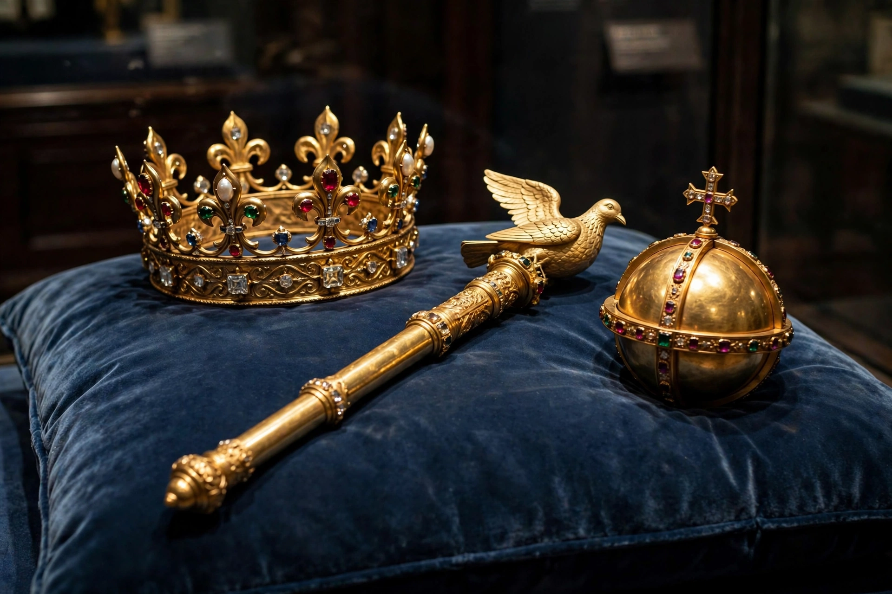

Regalia
For other uses, see Regalia (disambiguation).

Regalia is the set of emblems, symbols, or paraphernalia indicative of royal status, as well as the rights and privileges enjoyed by a sovereign. The word stems from the Latin substantive regalis, "that which belongs to a king", and the neuter plural regalia, "royal things". For example, the "royal regalia" are the attributes of a king or queen: crown, sceptre, orb, sword, ring, and other ceremonial objects used at a coronation or on state occasions.
Terminology
Originally, in Roman and medieval law, regalia referred not to objects but to the sovereign rights of the crown — the jura regalia — such as the rights to mint coinage, levy tolls, appoint bishops, and hold markets. Over time the term came to be applied principally to the physical insignia of monarchy. Comparable sets of ceremonial objects exist in many cultures, including the Imperial Regalia of Japan (the sword Kusanagi, the mirror Yata no Kagami, and the jewel Yasakani no Magatama) and the regalia of African and Oceanian kingship.
Coronation regalia
Coronation regalia typically includes:
- The crown, the principal symbol of monarchical authority
- The sceptre, representing temporal power and good governance
- The orb (globus cruciger), symbolising the monarch's role as God's representative on Earth
- The sword of state, and sometimes spurs, an ampulla of holy oil, and an armill or stole
In the United Kingdom, the Crown Jewels held at the Tower of London include St Edward's Crown, the Imperial State Crown, the Sovereign's Sceptre with the Cross, and the Sovereign's Orb, most dating from the Restoration of 1660 after the earlier regalia were destroyed under Oliver Cromwell.
Regalia as rights
In legal history the "regalia" were the inherent rights of the sovereign. The Investiture Controversy of the 11th and 12th centuries partly concerned the emperor's claim to regalian rights over church appointments and revenues, settled partially by the Concordat of Worms (1122). In England, regalian right (jura regalia) allowed the crown to take the revenues of a vacant bishopric. Such rights formed an important part of royal finance in the medieval period.
Notable collections
- Imperial Regalia of the Holy Roman Empire, kept in the Imperial Treasury, Vienna
- The French Crown Jewels, largely sold off in 1887, with surviving pieces in the Louvre
- The Danish Crown Regalia in Rosenborg Castle, Copenhagen
- The Honours of Scotland in Edinburgh Castle
- The Imperial Regalia of Japan, presented at enthronement ceremonies